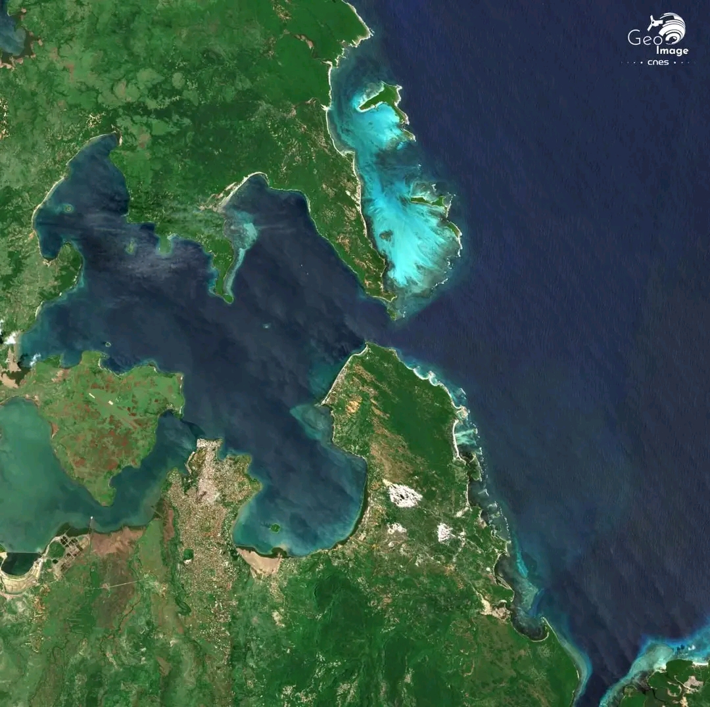

Notre Galerie Photo
Explorez la beauté de Diego Suarez à travers nos clichés.


À Propos
Découvrez la perle du nord de Madagascar

Diego-Suarez, ou Antsiranana, est une ville portuaire située au nord de Madagascar, chargée d'histoire et de légendes. Son nom vient des explorateurs portugais Diego Diaz et Fernando Suarez, qui ont visité la baie au XVIe siècle. La ville a été un carrefour stratégique pour les pirates, les commerçants et la France coloniale.
Contact
Nous sommes disponibles pour toute question
diegosuarez201@gmail.com
032 27 199 92
Antsiranana, Nord Madagascar